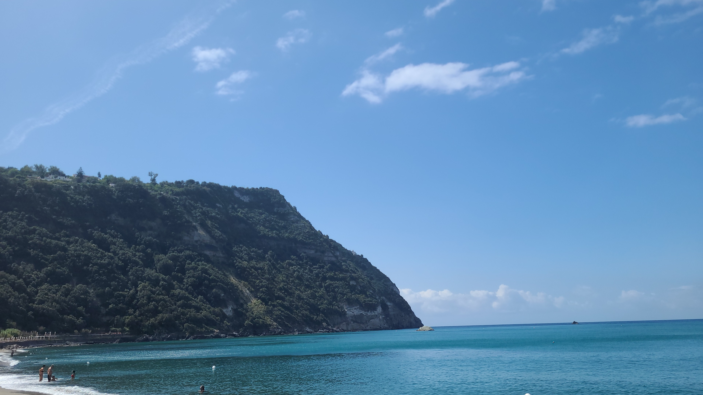

Andmiele
Researcher / Computer Engineer
Personal projects
A hobbyist SMP OS for multi-core x64 CPUs written from scratch
A simple micro-coded 32-bit RISC-V CPU written in System Verilog
Arithmetic modules for ALUs and FPUs written in System Verilog
System Verilog utils (SRAM, FIFO, RegFile)
16-bit x86 assembly tunnel effect raycaster